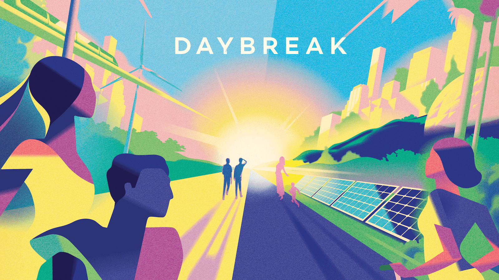
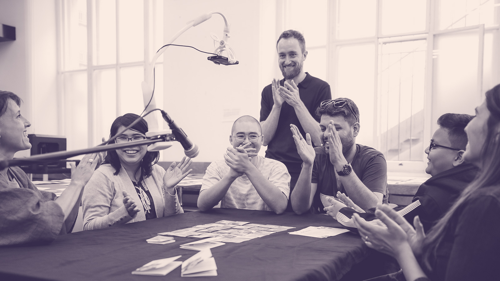

When I was a kid I spent many afternoons playing videogames. Years later I learned to code so that I could hack together my first game. Then went on to build digital toys for the BBC, teach game design at universities around the UK, and make arty games at the V&A.
These days I design cooperative board games. Board games because they bring people together face-to-face, and give them transparent rules to create new experiences with. Cooperative because they encourage players to trust each other, strategise together, and collectively address systemic challenges.

Daybreak is an award-winning cooperative board game about stopping climate change, in which you play combos of radical policy cards to decarbonise the global economy, while striving to build a just and safe future for all. Daybreak has been featured by Science, The Guardian, and the BBC.
Fading Memories is a cooperative twist on the classic Memory. Instead of competing with each other to collect cards, in this game you all collaborate to build collective memories.
Download print&play prototypes of my games on baddeo.gumroad.com

I collaborate with smart people and progressive organisations to co-design games, sometimes known as serious games though they are seriously fun, whether they are policy simulations, foresight methods, playful consultations, or game-hacking workshops.
Fancy chatting about your project? Email me m@tteo.me
I document my projects and muse on games, cats, watermelons, and climate politics on medium.com/@baddeo